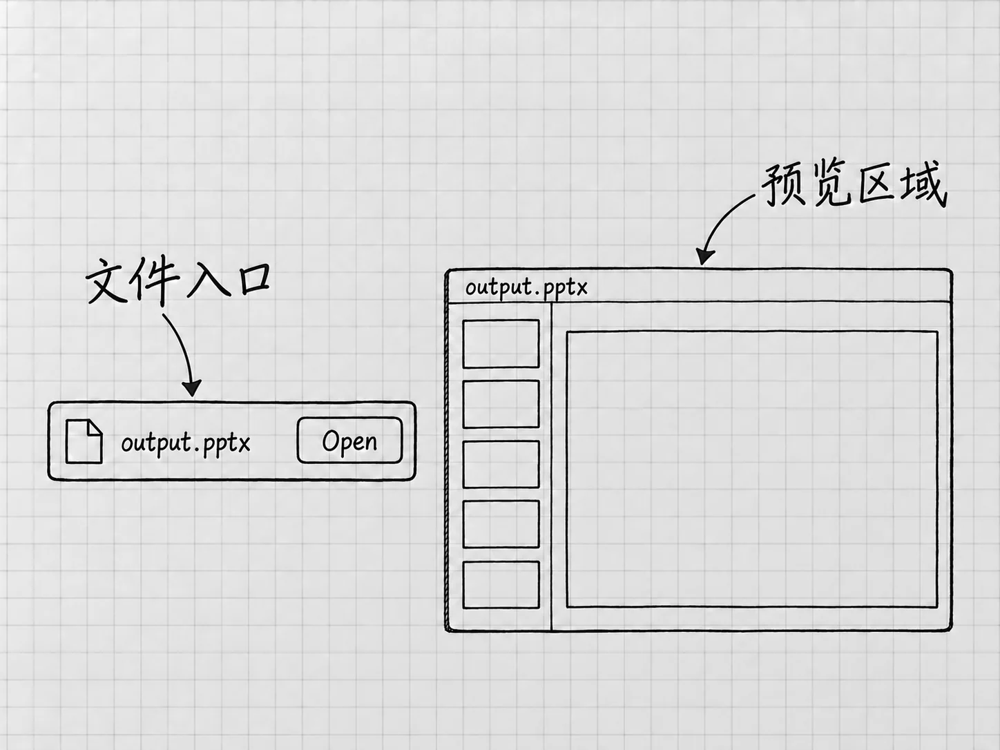

第10章 找到、检查、批注和保留成果
Codex说「完成了」，接下来轮到你。读完回复就关掉应用，会漏掉最要紧的一步：确认实际留下的东西就是自己要的东西。
第4章已经用文本文件做过一次完整核对。现在把这个方法扩展到其他成果，并认识预览、批注和分享。先有一个能够重新打开的成果，再决定怎样改、怎样交给别人。
先找文件，再看完成说明
留在刚才产生结果的任务里，核对回复中的文件名、保存位置和检查说明。当前项目中的文件，回到电脑文件夹里打开；回复提供了文件链接，就核对它指向哪一版。两份文件名字相似时，要看路径和文件名来区分。
任务没有连接项目时，文件可能存在你想不到的位置，更要问清楚：
请告诉我这次最终成果的文件名和完整路径，以及怎样重新打开它。如果目前只有消息中的文字，请先说明，不要把它叫作已保存文件。
准备长期保留的工作，可以请它把成果保存到你指定的、自己找得到的文件夹；涉及额外访问时，按权限请求处理。
打开实际文件，确认这次修改已经保存。一直开着的旧预览或旧窗口，显示的可能还是上一版。找不到预期变化时，先核对文件路径和版本，重新打开再看，确认没改再让它改。
预览让检查更方便

图：Mac成果预览局部：文件卡片中的Open用于打开成果，旁边的面板便于查看。output.pptx是来源界面的示例文件名；图中省略了演示文稿内容。
桌面应用可以在任务旁预览文档、表格、演示文稿、PDF等成果，具体支持范围和是否自动打开取决于格式与当前环境。预览让你边看结果边反馈；文件保存在哪里，仍要另外确认。成果预览
有的成果同时存在「内容」和「呈现方式」。例如HTML文件可以在支持的预览中显示为网页，也可以查看源文件。源文件里的文字和符号决定页面如何显示。你现在用不着会写这些，只要知道预览画面背后还有一份实际文件。
检查时把两者分开：先确认信息和行为符合要求，再看排版与可读性。待办清单先查四件事有没有漏、数量和截止时间有没有变，再决定条目之间要不要留空行。顺序反过来，就可能花很多时间修饰一份仍然有错的内容。
「帮我批注」应该指向什么
批注有两种常见意思。一种是请Codex阅读成果、提出意见；另一种是你在预览中指出某一处，让它据此修改。两者都需要具体对象。
要它提意见，可以直接写：
请检查「结果/待办清单-v2.txt」。逐项对照两份原始备忘，只提出遗漏、事实变化和容易误读的地方，说明对应原文。先不要修改文件。
这样得到的是检查意见。你先判断意见成立不成立，再决定要不要改。结尾那句「先不要修改文件」值得写上，否则一句「帮我看看」可能被理解成可以动手重写。
在支持批注的预览中，可以选中要讨论的文字或区域，把它加入反馈的上下文，再输入具体要求。官方说明支持对多类成果进行这种定位反馈，不同文件的可选区域和界面有差别。选中只是指明了位置，修改要等你把要求发出去以后才发生。
当前预览没有提供定位入口时，用文字同样能把问题说清楚：
「待办清单-v2.txt」中「联系维修店」这一项，请保留「询问可预约时间」和「尚未预约」。我希望把说明分成两行，更容易扫读。其他事项不改，另存为「待办清单-v3.txt」。
文件名、条目名、原意和改法都有了，用不用鼠标批注都能完成这次修改。只说「这里不对」，既没有选中区域也没有写出位置，它只能猜你指的是哪里。
检查修改，也检查没有要求修改的地方
修改完成后，先看指出的问题有没有解决，再看附近和其他内容有没有被带动。要求只改排版，日期却跟着变了，这次修改就没有完成。
第4章的v1与v2只差笔记本的状态，这样小的范围很容易检查。面对更大的成果，可以让它报告「改了哪些部分、哪些部分保持原样」，然后抽查报告所说的内容。它的自查报告是一条线索，文件对不对要看文件本身。
意见有冲突时，回到原材料。它建议把「日期未定」换成一个具体日期，理由是「这样清单更完整」，这个理由没有依据。你可以明确保留未知，只请它改善表达。
先保留认可版本，再尝试新改法
继续修改之前，给已经认可的版本起一个明确的名字，例如「待办清单-已核对.txt」，让新方案另存。文件名简单就行，能让你分清哪份已核对、哪份还在试改。
「撤销」要看作用范围。应用里的Undo表示撤销应用支持的上一项动作，Codex写过的文件它未必能还原。停止运行、删除一条消息、关闭预览，也都恢复不了文件。桌面命令的Undo说明
误改了文件，先停下，保留当前状态，再找自己确实有的副本或版本记录。有副本，就按副本恢复；让AI凭印象重写一份，得到的是新生成的内容。所以重要结果要在动手修改之前留好副本。
给别人文件，和给别人任务链接
对方只需要清单，就把最终文件交给他。发出前再打开一次，确认文件名、内容和版本。对方没有你的项目文件夹，发给他一条你电脑上的路径，他打不开。
另一种需求是让对方了解你们怎样讨论出这个结果。官方当前对本地Codex任务分享快照的说明限定在macOS桌面：在准备好的任务中使用 Share，检查可选的受众设置，等待快照上传完成，再用 Copy link 取得链接。分享会把快照放到可访问的服务上，所以进入分享操作之前先检查内容。任务分享范围
快照可能包含消息、图片、文件路径或修改差异。个人账号的链接通常供持有链接的人访问；组织账号还受组织成员、受众设置和管理员要求约束。敏感信息的自动处理可能有遗漏，复制链接后自己打开看一遍实际公开了什么，再决定发送。
快照记录的是分享当时的内容，之后继续修改任务，不会自动更新旧快照。别人拿到链接，看到的只是这份记录，你的电脑和项目他访问不了。需要撤销已有分享时，到ChatGPT设置的Data Controls管理共享链接，并检查链接是否仍能访问。官方这段说明没有列出Windows，Windows读者交付成果时，使用已经检查过的实际文件。
一次工作是否结束，可以这样判断：离开当前聊天以后，你还能不能找到正确的文件，说清它依据什么，知道下一次从哪一版继续。这三件事落实了，成果才便于使用。